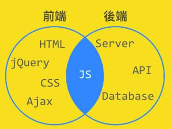

CSS使用方式與sublime的emmet用法
- 認識CSS設定文字語法
- emmet語法，常用快捷鍵
- 如何在圖片加上線條
使用hover當滑鼠移動時觸發條件
在這堂課上面，你了解如何使用CSS設定在HTML標籤上，以及設定
連結顏色。
html內容：< a class="color1" href="http://www.yahoo.com.tw">連結顏色< /a>。
- class類別名稱，用來命名方便CSS呼叫相互對應使用。
- a:hover{ color:blue; } 當滑鼠移動過去，變成藍色
認識CSS設定文字語法
- 文字顏色:color
- 文字大小:font-size
- 文字行距:line-height
- 文字字型:font-family
- 字型樣式:font-family:Arial
- 字型大小:font-size:18px
- 字行間距:line-height:1.5
- 字靠齊方向:text-align: left
- 首行縮排(一字元18px):text-indent: 36px
- 加入下底線:text-decoration: underline
- 畫大框框:border:1px solid black
- 刪除線用法:text-decoration: line-through
- 當滑鼠點下時動作:a:active
- 當滑鼠滑入時動作:a:hover
sublime的emmet語法常用功能
安裝方式
- sublime package套件安裝
- 在sublime開啟 View>Hide Console
- 將SUBLIME TEXT 文字複製貼上，並ENTER執行即完成安裝
- control+shift+p開啟執行
- 再安裝emmet套件完成安裝
常用emmet功能鍵
- 輸入h1再按Tab自動帶出完整標籤
- 輸入link:css再按tab，帶出連結CSS語法
- 輸入ul>li*4{text}再按tab，帶出ul且有4個li的清單
- 輸入!再按tab，自動帶入html基本元件
- 輸入lorem再按tab，跑出一堆文字，用來檢視是否跑版的內容產出方式
- text-decoration: line-through刪除線的用法
在圖片上加上logo的線條

說明：
1.img:hover{ border:4px solid pink; }
，當滑鼠滑入時border變成粉紅色
2.border-bottom:4px solid red;，下方劃出紅色底線
3.border-left:4px solid red;，左方畫出紅色線
css reset
css在各瀏覽器都有固定的格式，可以再CSS樣式中加入CSS Reset，就可以將預設值通通拿掉